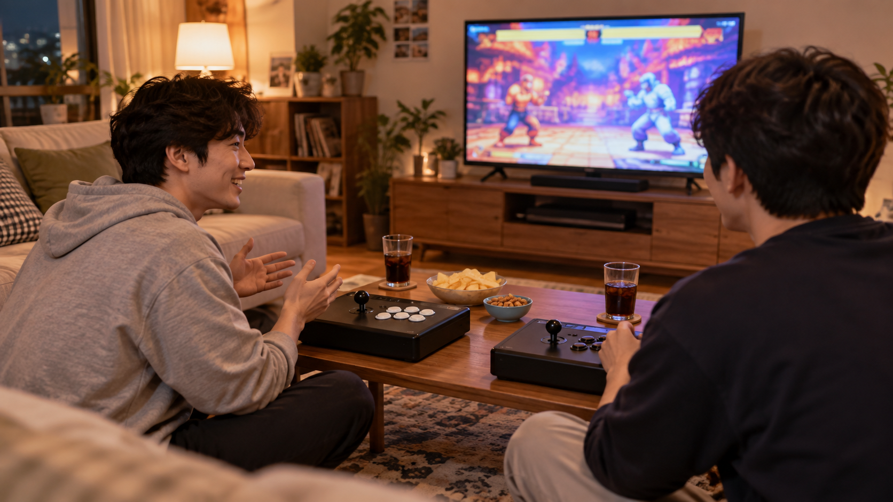
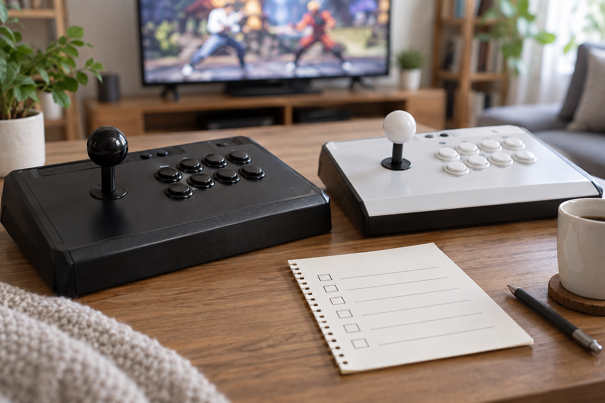

철권이나 스트리트 파이터를 집에서 즐길 제품은 게임 수보다 원하는 게임의 현재 수록·실행 안내, 2인 조작 환경과 설치 공간을 함께 확인해 고르는 편이 좋습니다. 같은 이름의 게임이라도 기기와 게임팩에 따라 수록 여부나 이용 방식이 달라질 수 있으므로, 구매하려는 상품의 최신 안내를 먼저 확인하세요.

먼저 함께할 장면을 그려 보세요
대전 게임은 혼자 연습할지, 두 사람이 같은 자리에서 할지에 따라 필요한 환경이 달라집니다. 두 사람이 함께할 계획이라면 각자 조작할 장치가 있는지와 게임별 2인 이용 안내를 따로 확인하세요. 조작기 수만으로 특정 게임의 동시 이용을 단정할 수는 없습니다.
대전 게임을 함께 즐기려면 기기 구성과 게임별 이용 안내를 모두 확인해야 합니다.
원하는 게임의 현재 안내를 확인하세요
철권이나 스트리트 파이터처럼 원하는 게임명이 분명하다면 판매 페이지의 수록 목록과 실행 안내에서 그 이름을 직접 찾아보는 편이 좋습니다. 목록에 보이지 않거나 표기가 애매하면 모델명과 게임명을 함께 적어 판매자에게 문의하세요. 노리박스는 제품을 준비할 때 직접 게임을 실행하고 조이스틱과 버튼을 만져보며 사용 과정의 불편을 확인한다고 소개합니다.
원하는 대전 게임의 수록 여부는 상품과 게임팩의 현재 안내로 확인해야 합니다.

조작부와 자리를 함께 확인하세요
대전 게임을 오래 즐길 때는 버튼과 조이스틱의 모양뿐 아니라 두 사람이 앉거나 설 자리, 팔을 움직일 여유, 화면을 보는 각도를 함께 살피는 편이 좋습니다. TV 연결형을 생각한다면 화면까지의 거리와 조작기를 둘 위치도 미리 그려 보세요. 두 사람이 쓸 환경의 기준은 가정용 오락기의 2인 이용 기준에서 더 자세히 확인할 수 있습니다.
대전 게임의 조작 환경은 손과 팔의 움직임을 기준으로 확인해야 합니다.
형태보다 사용 순서를 확인하세요
스탠드형, 좌식형, TV 연결형 가운데 무엇이 맞는지는 제품 이름보다 집에서 게임을 켜고 화면을 보고 조작할 순서를 떠올리면 가늠하기 쉽습니다. 설치할 자리와 동선을 먼저 정리한 뒤 원하는 게임의 수록 여부와 조작 구성을 비교하세요. 형태별 공간 기준은 우리 집 공간에 맞는 오락기 형태, 구매 전 게임 확인 방법은 원하는 게임을 확인하는 기준에서 이어서 볼 수 있습니다.
가정용 오락기 형태는 설치 공간과 실제 사용 순서를 함께 놓고 골라야 합니다.
현재 노리박스 오락실게임기와 관련 제품은 제품자세히보기에서 확인하세요.